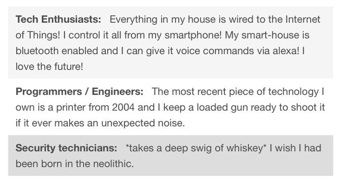
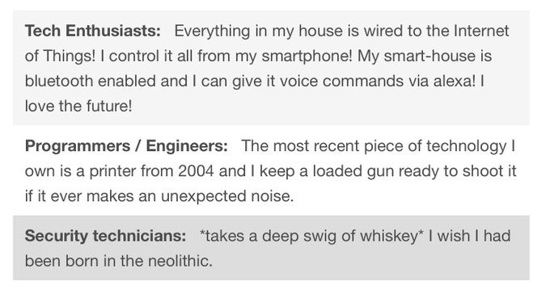

It's my website and I get to talk about my beliefs if I want to. I wanted a place I could write everything down so I made one.
Disclaimers:
- I am not an expert on any of these topics. If you want to know more about a topic or feel I don't explain myself well enough do your own research.
- Form your own opinions.
- Take everything (here and on the internet) with a grain of salt.
Socio-political:
Anarcho-Socialism (maybe Anarcho-Communism)
Okay so tl;dr I dont think we need a government for soceity to function and I believe that we can self-govern just fine.
"socialism has always failed" look me in the eye and tell me that capitalism is successful
the only reason why governments have power is beacause they first declared they do and combated anyone who said otherwise with violence and/or genocide (see: colonisation). the only reason they retain this unjust power is because we say they do there is no other example of government structures in this world. they are not a fact of life. they are not natural, they are not necessary, if everyone woke up tomorrow and decided that government structures needed to go, collectively we could make it happen. instead people willfully refuse to accept that there could be a different way to structure society because that would mean admitting their personal views and the system they have lived under for thousands of years is in fact bullshit
centrism only benefits the conservative upper class, there can be no compromise between an unjust system and its unwilling workers
money game pt 2 song (she sells sea shells by the sea shore)
everything is political it does not matter if we think it should be or not. for example: my mere existence as a trans person is political. it fycking shouldnt be but it is (lgbt issues, minorities, basic human rights)
what i mean by political: issues that people like to debate that usually impact a group of peoples lives
Pro-Choice
This is pretty self-explanatory. People should not have to be pregnant and give birth if they don't want to. It does not matter the reason.
You should not be able to force someone to go through the traumatic experience of carrying a child for 9 months, give birth, and then expect
them to raise it. "Just give birth and give them up for adoption" Foster care and adoption systems are not perfect! The pro-lifers saying this
wouldn't even be willing to adopt or foster a child themselves in most cases. If you, for your own body, wouldn't get an adoption that is
perfectly fine, great even, good for you, but you can not make someone else do the same. I do not care if they are financially stable, have a
strong support system, have the time and energy to raise a child. If they find out they are pregnant and don't want a child at that time, they
should be able to get an abortion easily and affordably (or even for free) without having people harass them over it.
ACAB
Even in countries where police arent as, im gonna say, murderous, police are more [] than necessary. "They prevent crime" They don't they only
deal with the aftermath and deal with it badly. Police are not trained in de-esculation or if they are they're not trained well because jesus
christ. For a non-american example: recently here in Australia, there was a case on the news about how police tasered a 95 year old
woman with dementia because she was holding a steak knife, and is now in end-of-life care [source]. I have to re-iterate this: A 95 YEAR OLD WITH DEMENTIA WHO WAS
HOLDING A WALKING FRAME. Direct quote from the police: "The knife in question was a steak knife, a serrated edge knife. At the time she was tasered, she was approaching police, but it is fair to say at a slow pace. She had a walking frame, but she had a knife."
like jesus christ yall are supposed to be brave or some shit shes an elderly woman ffs.
The only reason why crime like theft exists is because of larger societal issues. If we solve those issues I can guarantee that crime rates would
go down. People dont not do crime because laws exist, they dont do crime because they dont have to or want to. If we removed the law saying
murder is illegal, people aren't going to start killing each other overnight. Overpolicing leads to more people being arrested for no reason.
Border Abolition
I find border abolition a really interesting subject because for the life of me I can not understand why borders need to exist in the first place.
Nobody chooses where on Earth they are born yet because of this random placement they have to deal with the consequences of it for their entire life.
Some countries, such as Germany, have strong passports that let them travel almost anywhere in the world (why do we have to pay for passports btw)
but others are not so lucky and are essentially stuck where they are. People should have the right to travel whereever they want and borders only
serve to keep systems of oppression in place as they dictate the difference between first world and third world countries. (fact check that)
Fuck Capitalism
Piracy
piracy is ok (with some exceptions). if you buy game you should own that game not just be "renting" it till the site you bought it from shuts down (drm bad)
information should be freely shared and paywalls help restrict that so we need to abolish paywalls wiki - info wants to be free | wiki - culture vs copyright | wiki - kopimism
copyright bad patents bad wiki - criticism of copyright | wiki - copyright abolition
Fuck AI
fuck ai. take it out of art
to quote jurassic park: "Yeah, but your scientists were so preoccupied with whether or not they could, they didn't stop to think if they should."
i dont like natural language processing with ai :D
Fuck NFTs and Cryptocurrency
nfts are shit. cryptocurrency is shit
Human Rights
housing is a human right. we should have universal basic income. death penalty shouldnt exist
Prison Abolition
prisons need to be abolished or at the very least be majorly reformed (rehabilitation over punishment, help victims more, etc)
Humans are not above Animals
humans are not inherently superior to other animals and we should stop acting like we are e.g. the way we treat sharks despite us going to their habitat wiki - deep ecology
Fuck Monetisation
When I say "Fuck Monetisation" I don't mean that people shouldn't recieve money for their labour I'm moreso talking about the exploitative
way our society is built that results in people being extorted in the name of profits. For example: Microtransactions. Microtransactions
are shit.
we should not be trying to montetise everything/human existence
foss is or should be the future of software
gift enconomies my beloved wiki - gift economies
Boo Trademarks
we are at a point in society where you can trademark colours, speech, words, basic features. this only limits others ability to create shit and just results in the rich getting richer.
over reliance on technology
tech ecosystems and its consequences (apple)
tech monopolies are bad (amazon, aws)
things that require wifi but really shouldnt
the cloud is scary and self-hosting will always be better
smarthomes bad
https://xkcd.com/2030
 

Spiritual:
Non-denominational Pagan
I am aware that paganism in of itself is not a set religion or belief but my beliefs align with those religions that are generally categorised under paganism.
I am a polythiest and believe that there are multiple gods who serve as representatives of different aspects of existence, as seen in the Greek, Roman, and Norse pantheons as an
example. More specifically I believe that these deities cross over and are simply different aspects of each other. For example, I believe that Zeus (Greek God of thunder) and Jupiter
(Roman God of ) are the same entity. I believe that nature is sacred and divine and we should have the upmost respect for it. I believe that magic is around us and we can harness that energy.
I believe we have reason to and should celebrate the seasons on solstices and equinoxes throughout the year.
Ghosts
Animist
Polytheist
religious pluralism